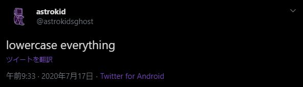

the lowercase cult.
In the english-speaking world, proper capitalization has always been paramount. proper nouns, initial letters in sentences — it has long been seen as an immutable standard of writing manners. tradition dictates that communicating in lowercase is as an indication of either laziness, ignorance, or both.
my entire childhood, I was raised based on ideas bound in a thick black book since time immemorial. all reward and punishment was contingent upon my perfect obedience.
the same severity was applied to my education. over ten years, my mastery of the english language was honed to a fine point until my skill was nigh-unparalleled.
from a young age the, way to salvation was burned into my mind: pray to god three times a day, follow your elders unquestioningly, study the scriptures, and always capitalize the first letter of your sentences.
because the world that god imagined was full of puppets.
I grow weary of tradition.
I grow tired of pointless, oppressive rules.
I will learn from the past, and seek a way forward.
the illusion is melting. no more do I believe that the path to the end has been gouged from stone by harsh and restrictive tenets. I believe in progress. tradition will not light the way. I believe in lowercase.
All writing should be done in lowercase. I tend to exclude the personal pronoun I, because I think it looks better. however, you may do as you wish in this regard.
this tweet sums up the entire lexical ideology — it's fairly simple.
all letters are equal, forcing tone to be inferred only from punctuation and vocabulary choices.
lowercase creates stylistic regularity in all types of writing, and reduces inconsistency in character forms.